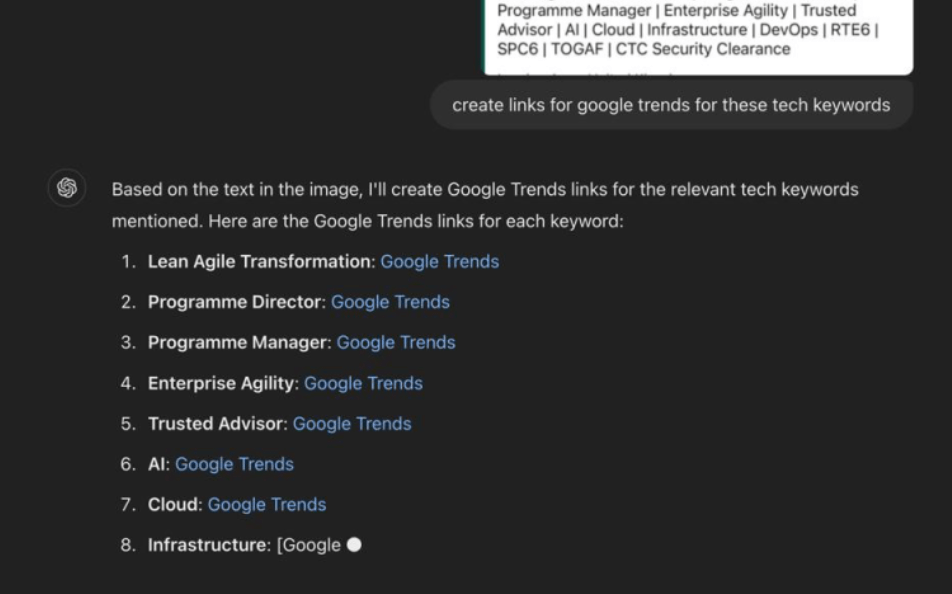

Analyse in Bulk With GPT 4.0

Exploring the Latest Trends in Technology and Agile Practices with Trends
The world of technology and business transformation is constantly evolving, with new methodologies and tools emerging regularly to address the dynamic needs of organizations. To stay ahead, it's crucial to keep an eye on the trending keywords that signal shifts in the industry. Below, we explore some of the most relevant tech keywords currently gaining traction, along with links to their Google Trends pages where you can see how these terms are performing over time.
1. Lean Agile Transformation
Lean Agile Transformation represents the shift towards combining Lean principles with Agile methodologies to optimize productivity and responsiveness in business processes. This trend is particularly popular in software development and project management, where speed and efficiency are critical. Explore Lean Agile Transformation on Google Trends.
2. Programme Director
The role of a Programme Director is becoming increasingly vital as organizations undertake large-scale projects and transformations. This role involves overseeing multiple projects to ensure alignment with business objectives. The growing complexity of business environments makes the Programme Director’s strategic oversight indispensable. Explore Programme Director on Google Trends.
3. Programme Manager
Similar to the Programme Director, a Programme Manager focuses on managing and coordinating multiple related projects. However, the emphasis is more on operational execution rather than strategic direction. The demand for skilled Programme Managers reflects the need for effective governance and control in project-intensive industries. Explore Programme Manager on Google Trends.
4. Enterprise Agility
Enterprise Agility refers to an organization's ability to adapt quickly to market changes and internal disruptions. It involves fostering a culture that supports rapid decision-making, flexibility, and responsiveness. With the increasing pace of change in the global market, more companies are striving to become agile at an enterprise level. Explore Enterprise Agility on Google Trends.
5. Trusted Advisor
The concept of a Trusted Advisor has gained prominence, particularly in consulting and client-facing roles. Being a Trusted Advisor means building a relationship based on trust, credibility, and a deep understanding of the client's needs. This trend reflects a shift towards more personalized, value-driven client interactions. Explore Trusted Advisor on Google Trends.
6. AI (Artificial Intelligence)
AI continues to dominate the tech landscape, driving innovation across various sectors from healthcare to finance and beyond. With advancements in machine learning, natural language processing, and robotics, AI is transforming how businesses operate and compete. Explore AI on Google Trends.
7. Cloud
The Cloud has revolutionized data storage, computing power, and software delivery, enabling businesses to scale rapidly and reduce costs. As more organizations move to cloud-based solutions, understanding this trend is essential for staying relevant in today's digital world. Explore Cloud on Google Trends.
8. Infrastructure
Infrastructure, in the context of IT, refers to the fundamental physical and software resources necessary for an organization to operate. With the rise of cloud computing, the concept of infrastructure has expanded beyond physical servers to include virtual resources and services. Explore Infrastructure on Google Trends.
9. DevOps
DevOps is a set of practices that combines software development (Dev) and IT operations (Ops) to shorten the development lifecycle and provide continuous delivery of high-quality software. As organizations seek to innovate faster, the adoption of DevOps practices continues to grow. Explore DevOps on Google Trends.
10. RTE6
RTE6, or Release Train Engineer, is a role in the Scaled Agile Framework (SAFe) that focuses on facilitating Agile Release Trains (ARTs). This role is crucial for ensuring that teams within the ART are aligned and delivering value efficiently. Explore RTE6 on Google Trends.
11. SPC6
SPC6 stands for SAFe Program Consultant, a role that helps organizations adopt Agile frameworks at scale. SPCs play a key role in implementing and coaching teams on Agile methodologies, making them vital to successful agile transformations. Explore SPC6 on Google Trends.
12. TOGAF
TOGAF, The Open Group Architecture Framework, is a popular enterprise architecture framework used to improve business efficiency. As organizations look to streamline processes and enhance their IT infrastructures, TOGAF remains a relevant and widely adopted standard. Explore TOGAF on Google Trends.
13. CTC Security Clearance
CTC Security Clearance is a level of security vetting in the UK, primarily required for roles involving access to government or sensitive information. As cybersecurity becomes increasingly important, the demand for professionals with security clearances is rising. Explore CTC Security Clearance on Google Trends.
These keywords represent just a snapshot of the current trends shaping the tech landscape. By following these trends, you can stay informed and prepared for the evolving challenges and opportunities in technology and business transformation. Click on the links to explore each trend in more detail and see how interest is shifting over time.
Imported from rifaterdemsahin.com · 2025